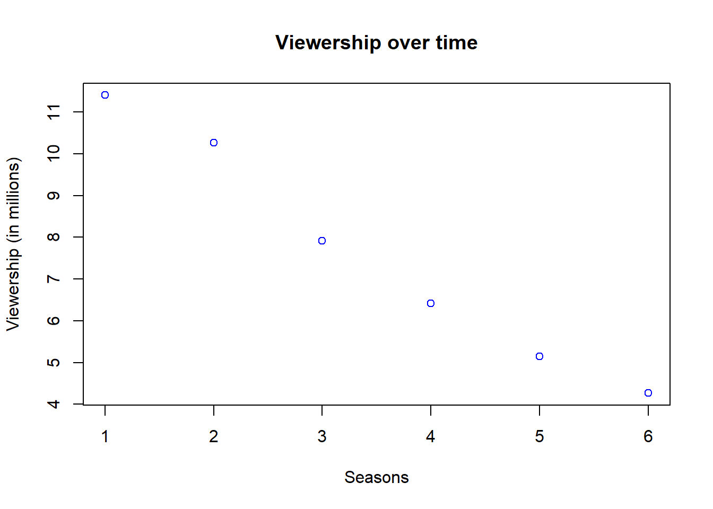
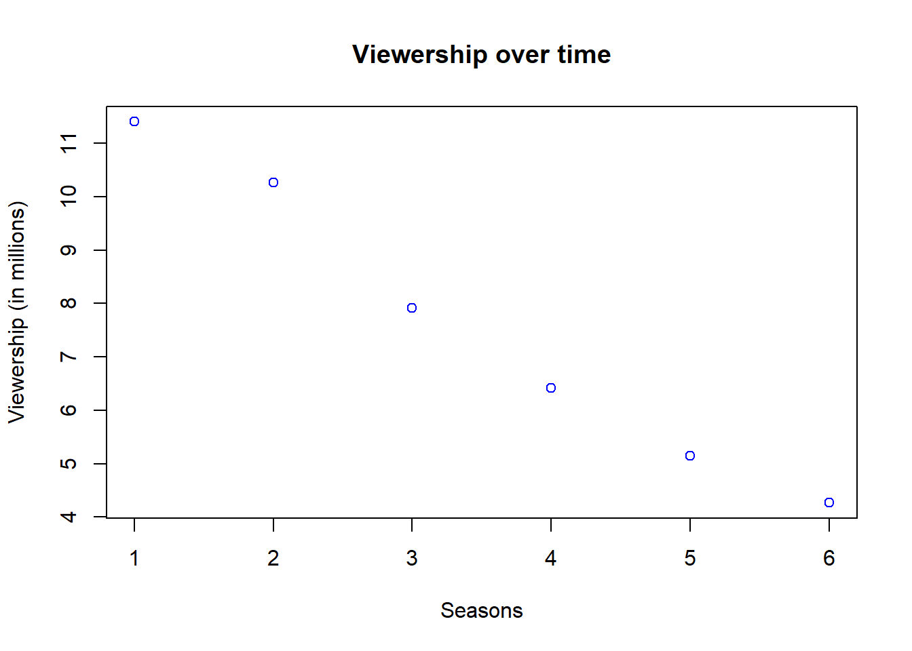
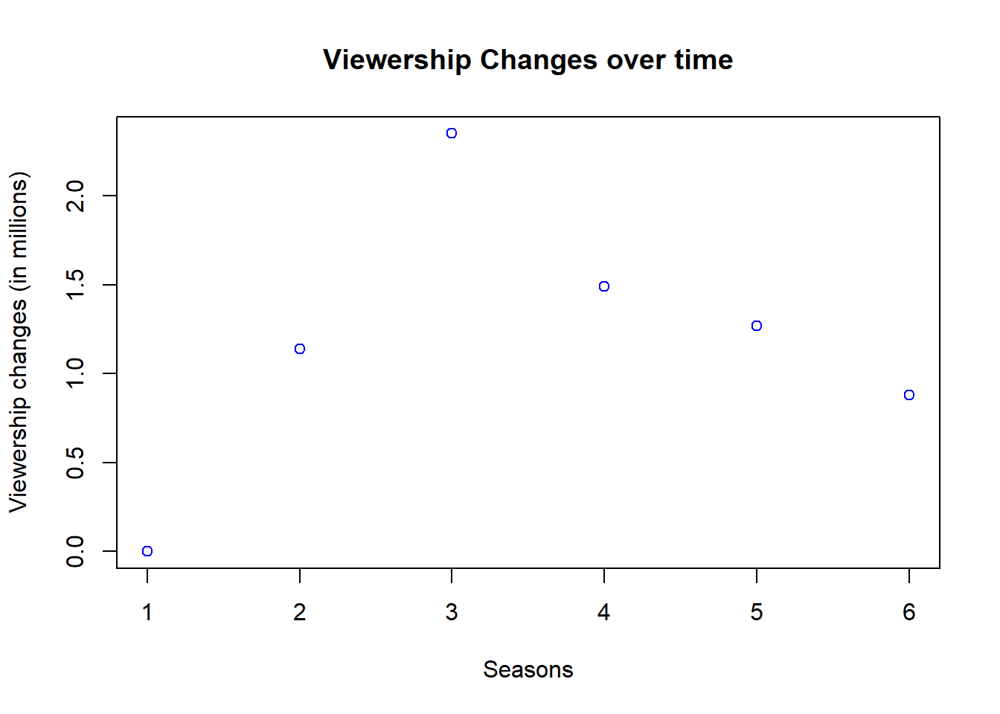

Viewership <- c(11.40, 10.26, 7.91, 6.42, 5.15, 4.27)
plot(Viewership, col = "blue",main = "Viewership over time", xlab = "Seasons", ylab = "Viewership (in millions)")
How to Get Away with Murder is an American legal drama thriller television series that premiered on ABC on September 25, 2014, and concluded on May 14, 2020. The series was created by Peter Nowalk, and produced by Shonda Rhimes and ABC Studios. The series aired on ABC as part of a night of programming, all under Rhimes’s Shondaland production company.

| Season | TV Season | Number of Episodes | Time slot (ET) | Viewership |
|---|---|---|---|---|
| 1. | 2014–15 | 15 | 11.40 (in millions) | |
| 2. | 2015–16 | 15 | 10.26 (in millions) | |
| 3. | 2016–17 | 15 | Thursdays | 7.91 (in millions) |
| 4. | 2017–18 | 15 | 10:00 pm | 6.42 (in millions) |
| 5. | 2018–19 | 15 | 5.15 (in millions) | |
| 6. | 2019–20 | 15 | 4.27 (in millions) |
| Season | TV Season | Number of Episodes | Time slot (ET) | Ranking |
|---|---|---|---|---|
| 1. | 2014–15 | 15 | 30 | |
| 2. | 2015–16 | 15 | 32 | |
| 3. | 2016–17 | 15 | Thursdays | 44 |
| 4. | 2017–18 | 15 | 10:00 pm | 64 |
| 5. | 2018–19 | 15 | 85 | |
| 6. | 2019–20 | 15 | 84 |
Viewership <- c(11.40, 10.26, 7.91, 6.42, 5.15, 4.27)
plot(Viewership, col = "blue",main = "Viewership over time", xlab = "Seasons", ylab = "Viewership (in millions)")
Viewership_changes <- c(0, 1.14, 2.35, 1.49, 1.27, 0.88)
plot(Viewership_changes, col = "blue", main = "Viewership Changes over time", xlab = "Seasons", ylab = "Viewership changes (in millions)")
cat("Season 1 had 11.40 (in millions) viewership and was ranked 30.") Season 1 had 11.40 (in millions) viewership and was ranked 30.viewship_change <- 11.40 - 10.26
ranking_change <- 32-30
cat("Season 2 shows a sudden decrease in Viewership of the season by", viewship_change, "(in millions), and surprisingly an increase in Ranking by", ranking_change)Season 2 shows a sudden decrease in Viewership of the season by 1.14 (in millions), and surprisingly an increase in Ranking by 2viewship_change <- 10.26 - 7.91
ranking_change <- 44 - 32
cat("Season 3 shows a further decrease in Viewership by", viewship_change , "(in millions), however an increase in Ranking by", ranking_change)Season 3 shows a further decrease in Viewership by 2.35 (in millions), however an increase in Ranking by 12viewship_change <- 7.91- 6.42
ranking_change <- 64- 44
cat("Season 4 shows another decrease in Viewership by",viewship_change , "(in millions), however an increase in Ranking by", ranking_change)Season 4 shows another decrease in Viewership by 1.49 (in millions), however an increase in Ranking by 20viewship_change <- 6.42-5.15
ranking_change <- 85-64
cat("Season 5 decreases in Viewership by", viewship_change, "(in millions), and continue to increase in Ranking by", ranking_change)Season 5 decreases in Viewership by 1.27 (in millions), and continue to increase in Ranking by 21viewship_change <- 5.15-4.27
ranking_change <- 85-84
cat("Season 6 decreases once more by", viewship_change , "(in millions), and however decreases by", ranking_change)Season 6 decreases once more by 0.88 (in millions), and however decreases by 1viewship_change <- 11.40-4.27
ranking_change <- 84-30
cat("Overall decrease in Viewership from season 1 to season 6 was", viewship_change ,"(in millions), whereas overall increase for Ranking was", ranking_change)Overall decrease in Viewership from season 1 to season 6 was 7.13 (in millions), whereas overall increase for Ranking was 54